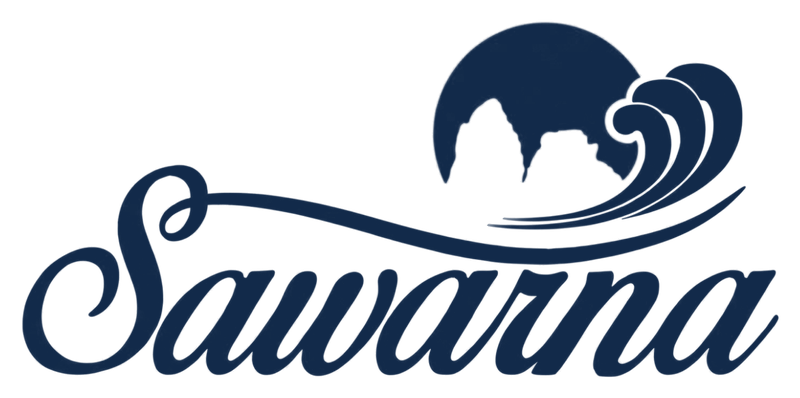
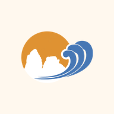

Brand Kit · v1.0
Sawarna Smart Guide
Panduan identitas visual untuk peta interaktif Pantai Ciantir. Semua turunan diambil dari logo Sawarna: biru ombak, oranye senja, dan putih karang Tanjung Layar.
Panduan identitas visual untuk peta interaktif Pantai Ciantir. Semua turunan diambil dari logo Sawarna: biru ombak, oranye senja, dan putih karang Tanjung Layar.
Logo terdiri dari wordmark "Sawarna" dan simbol matahari senja, karang Tanjung Layar, serta ombak. Gunakan versi penuh bila ruang cukup, dan simbol saja untuk ikon aplikasi, favicon, atau pin.




Klik warna untuk menyalin kode hex. Proporsi ideal: 60% putih/pasir, 30% biru, 10% oranye. Oranye adalah aksen, bukan warna latar besar.
Plus Jakarta Sans adalah huruf karya desainer Indonesia (Tokotype), gratis di Google Fonts. Bentuknya ramah, jelas di layar HP, dan cocok berdampingan dengan wordmark berhuruf sambung. Yellowtail hanya dipakai sebagai aksen sapaan.
Aa Bb
ABCDEFGHIJKLMNOPQRSTUVWXYZ
abcdefghijklmnopqrstuvwxyz
0123456789 Rp · ± % → ★
Temukan homestay, kuliner laut, dan spot surfing terbaik, semuanya dalam satu peta.
3xl · 44 / 8002xl · 32 / 700xl · 24 / 700lg · 20 / 600md · 16 / 400sm · 14 / 500xs · 12 / 600Setiap kategori layanan punya satu warna dan satu ikon. Pin berbentuk tetesan dengan bingkai putih agar terbaca di atas ilustrasi maupun foto satelit.
Semua elemen sentuh minimal 44 px. Di layar lebar informasi tampil sebagai kartu pop-up, di HP sebagai panel bawah (bottom sheet) agar peta tetap terlihat.
Dekat jalur utama, cocok untuk rombongan keluarga.
Peta memakai gaya ilustrasi datar (flat) dengan sedikit kedalaman, seperti papan peta taman wisata. Setiap zona dibedakan oleh warna dasar + bentuk bangunan khasnya, bukan hanya garis tepi.
Zona UMKMDasar koral muda, lapak beratap belang merah-putih, payung pantai
Zona HomestayDasar hijau muda, rumah beratap genteng, pepohonan
Jalur utamaJalan setapak krem bertepi cokelat, titik-titik langkah
Batas kawasanPita oranye putus-putus berbingkai putih
PantaiPasir krem bertekstur, garis buih putih
LautGradasi biru dengan pola ombak halus
Ramah seperti warga yang menunjukkan jalan: singkat, jelas, sopan. Utamakan informasi praktis (harga, jarak, jam buka) daripada kata-kata promosi.
Semua file ada di folder brand/ repositori. Token warna & ukuran untuk kode ada di brand/tokens.css.